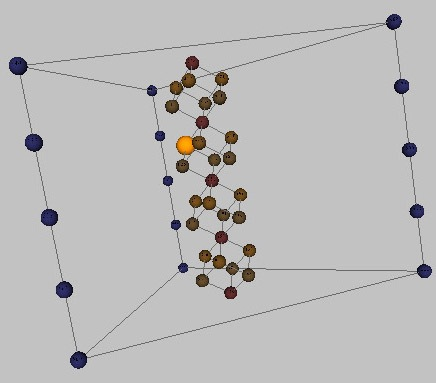

ISMIR Day 1 invited talk - The Geometry of musical chords
My notes from the ISMIR 2008 - invited speaker talk Abstract:
In my talk, I will describe five properties that help make music sound
tonal — or “good,” to most listeners. I will then show that combining
these properties is mathematically non-trivial, with the consequence
that space of possible tonal musics is severely constrained. This leads
me to construct higher-dimensional geometrical representations of
musical structure, in which it is clear how the various properties can
be combined. Finally, I will show that Western music combines these
five properties at two different temporal levels: the immediate level of
the chord, and the long-term level of the scale. The resulting music
is hierarchically self-similar, exploiting the same basic procedures on
two different time scales. In fact, one and the same twisted cubic
lattice describes the musical relationships among common chords and
scales.
In this talk, Dmitri explained his geometrical model of music structure. He uses the model to explain ow harmony and counterpoint. The gist of the talk can be found in this Science article: The Geometry of Musical Chords. A good talk, interesting subject matter (but I must admit I'm skeptical).
More info: The Geometry of Music. 